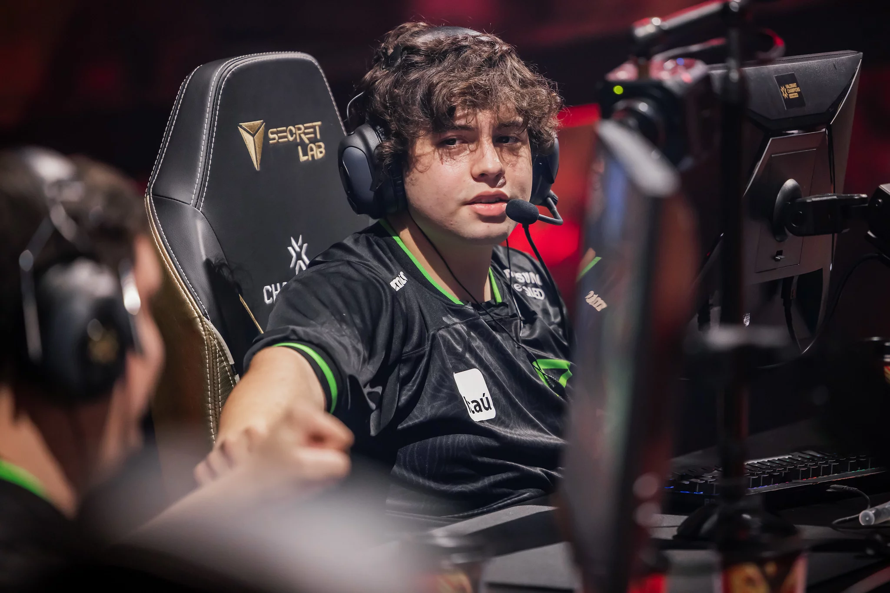

Felipe (Less) Basso
Com apenas 17 anos de idade, Felipe “Less” Basso, da LOUD, fez parte da lista de jogadores mais jovens que estiveram na disputa do VALORANT Masters Copenhagen 2022. Atuando pela FNATIC, Emir “Alfajer” Ali Beder apareceu como o mais novo de todo o torneio, com 17 anos e mês de vida completados até o momento em que este artigo vá para o ar.
O levantamento apresentado pela Liquipedia aponta que a média de idade da competição é de 22 anos, indicando uma longa lista de jovens talentos no cenário profissional de VALORANT. Ela apresenta uma lista completa com a idade de quase todos os jogadores e as respectivas idades que possuem.